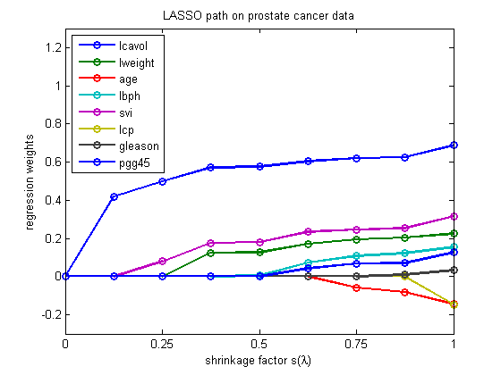

Plot the full L1 regularization path for the prostate data set
load prostate
w = lars(X, y, 'lasso')
lambdas = recoverLambdaFromLarsWeights(X, y, w);
figure;
plot(w, '-o','LineWidth', 2);
legend(names{1:size(X, 2)}, 'Location', 'NorthWest');
set(gca,'YLim', [-0.3, 1.3]);
title('LASSO path on prostate cancer data');
xlabel('shrinkage factor s(\lambda)');
ylabel('regression weights');
set(gca, 'XTick', 1:2:10);
set(gca, 'XTickLabel', {'0', '0.25', '0.5', '0.75','1'});
printPmtkFigure lassoPathProstate
w =
Columns 1 through 6
0 0 0 0 0 0
0.4190 0 0 0 0 0
0.4992 0 0 0 0.0802 0
0.5724 0.1245 0 0 0.1765 0
0.5752 0.1273 0 0.0052 0.1811 0
0.6052 0.1708 0 0.0735 0.2337 0
0.6207 0.1937 -0.0578 0.1089 0.2473 0
0.6254 0.2039 -0.0819 0.1230 0.2537 0
0.6883 0.2245 -0.1454 0.1545 0.3155 -0.1467
Columns 7 through 8
0 0
0 0
0 0
0 0
0 0
0 0.0423
0 0.0676
0.0090 0.0716
0.0324 0.1270
